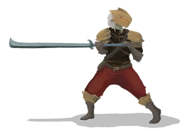
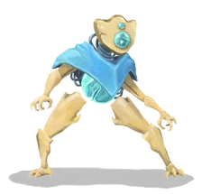
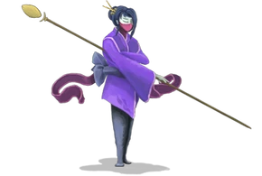

The guardian

El último soldado de los Ironclads.
Vendió su alma para cosechar energia demoníaca
Vendió su alma para cosechar energia demoníaca
Ironclad porta un arsenal de armas de golpe poderosas, cuenta con formidables opciones
defensivas y obtiene fuerza diabólica de sus benefactores demoníacos para potenciarse
a si mismo.
Comienza con 80hp, la mayor cantidad de vida entre los personajes, y puede manipular la habilidad Exhaust, para enviar las cartas al exilio de donde pueden ser recuperadas.
Ironclad comienza con la reliquia Burning Blood, que regenera 6hp despues de cada combate.
Comienza con 80hp, la mayor cantidad de vida entre los personajes, y puede manipular la habilidad Exhaust, para enviar las cartas al exilio de donde pueden ser recuperadas.
Ironclad comienza con la reliquia Burning Blood, que regenera 6hp despues de cada combate.
Silent es una cazadora con cartas de picaro de fantasía.
Este astuto personaje debilita a sus enemigos con numerosos cortes y envenamientos, mientras se vale de trucos y artimañas para esquivar golpes.
Comienza con 70hp, utiliza poderosas cartas de robo y descarte para asegurarse de estar siempre un paso por delante de sus enemigos.
Silent comienzo con la reliquia Ring of the Snake, que le permite robar dos cartas adicionales al comienzo de cada combate.
Este astuto personaje debilita a sus enemigos con numerosos cortes y envenamientos, mientras se vale de trucos y artimañas para esquivar golpes.
Comienza con 70hp, utiliza poderosas cartas de robo y descarte para asegurarse de estar siempre un paso por delante de sus enemigos.
Silent comienzo con la reliquia Ring of the Snake, que le permite robar dos cartas adicionales al comienzo de cada combate.
Una cazadora mortal de las tierras de la niebla. Erradica a sus enemigos con dagas y veneno
Silent

Defect

Automata de combate que se volvió consciente de sí mismo.
La tecnología antigua le permite manipular los orbes
La tecnología antigua le permite manipular los orbes
Antaño vivió entre caminadores de orbes y automatas de bronce como uno de ellos, con el paso del
tiempo adquirió autoconsciencia y desde entonces busca la forma de salir de "La Torre".
Ataca a sus enemigos con un arsenal de alta técnología, poderes y evocaciones elementales.
Defect posee una mecánica única; los orbes. Mediante cartas y reliquias, Defect canaliza estas esferas elementales en sus ranuras de orbe, activando sus efectos pasivos cada turno o evocándolos para destruirlos y exprimir toda su energía de un solo golpe.
Defect comienza con 75hp y tres ranuras de orbe, pero puede obtener mas o perder algunas usando cartas y reliquias.
La reliquia inicial que porta es "Cracked Core" que le otorga un orbe de rayo al comienzo de cada combate.
Ataca a sus enemigos con un arsenal de alta técnología, poderes y evocaciones elementales.
Defect posee una mecánica única; los orbes. Mediante cartas y reliquias, Defect canaliza estas esferas elementales en sus ranuras de orbe, activando sus efectos pasivos cada turno o evocándolos para destruirlos y exprimir toda su energía de un solo golpe.
Defect comienza con 75hp y tres ranuras de orbe, pero puede obtener mas o perder algunas usando cartas y reliquias.
La reliquia inicial que porta es "Cracked Core" que le otorga un orbe de rayo al comienzo de cada combate.
Una monje que utiliza los efectos de sus posturas a su favor.
Cuenta con un arsenal orientado al control de su mazo mediante "la adivinación", retención y generación de energía, asi como la creación de nuevas cartas en mitad del combate.
Comienza la ascensión con 72hp
Su reliquia inicial "Pure water" añade un "milagro" (aumenta la energia en 1 este turno) a tu mano al comienzo de cada combate.
Cuenta con un arsenal orientado al control de su mazo mediante "la adivinación", retención y generación de energía, asi como la creación de nuevas cartas en mitad del combate.
Comienza la ascensión con 72hp
Su reliquia inicial "Pure water" añade un "milagro" (aumenta la energia en 1 este turno) a tu mano al comienzo de cada combate.
Una asceta ciega que ha venido a evaluar "La Torre". Conocidad como la maestra de las posturas divinas
Watcher
